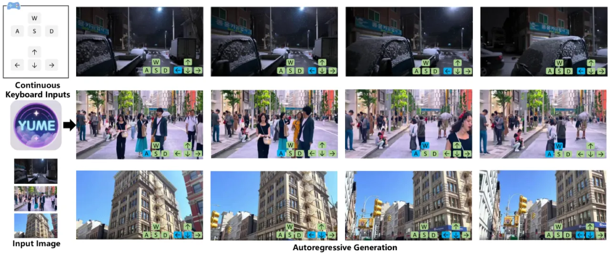
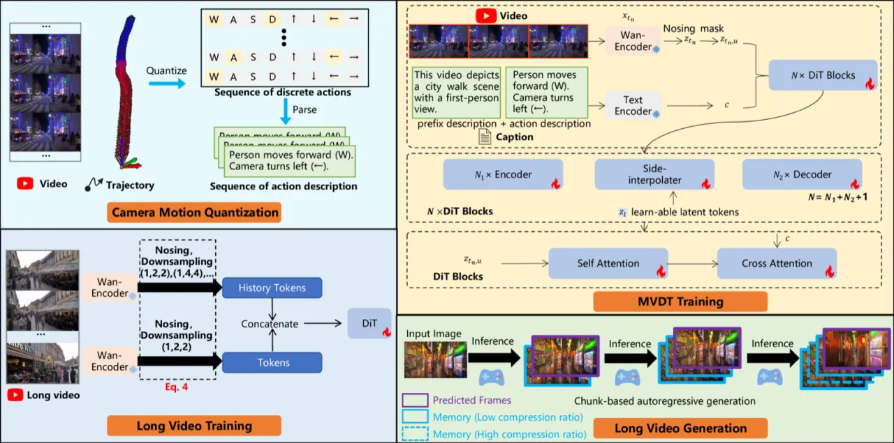
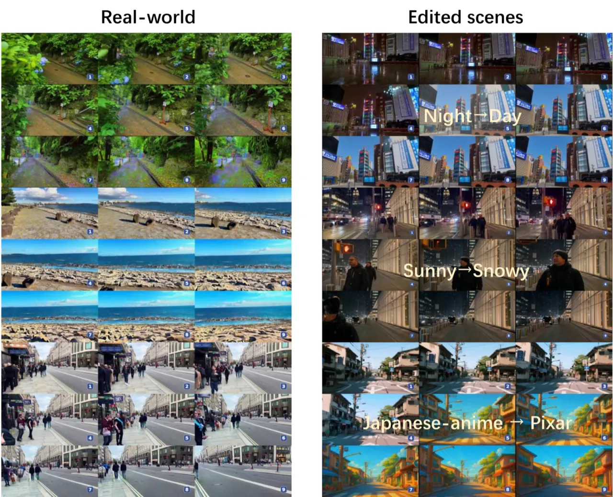
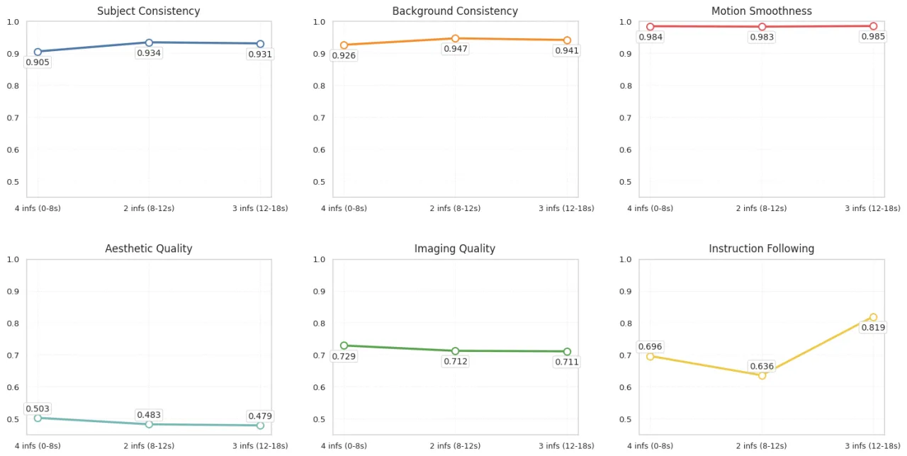
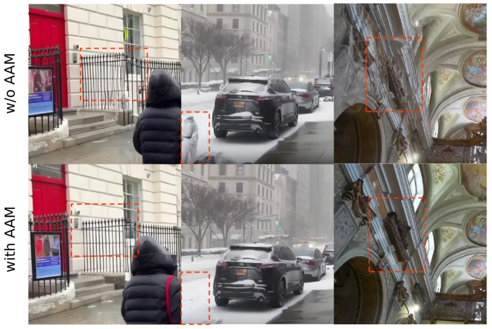

Yume 提出了一套面向交互式世界生成的完整框架，核心由四大模块组成：量化相机运动（QCM）、Masked Video Diffusion Transformer（MVDT）、无训练 Anti-Artifact Mechanism（AAM）以及 TTS-SDE 采样器。模型以单张图像为输入，通过键盘方向键控制相机运动，以自回归方式生成理论上无限时长的高质量动态场景视频，并在城市实景等复杂场景中取得显著效果。
现有视频扩散模型在生成交互式、可导航的真实世界场景时面临三大核心挑战：合成数据与真实场景之间的领域鸿沟、依赖绝对相机姿态参数导致的标注难与训练不稳定，以及城市复杂场景中普遍存在的视觉 artifacts（闪烁、纹理异常、几何扭曲）。
"Yume aims to use images, text, or videos to create an interactive, realistic, and dynamic world, which allows exploration and control using peripheral devices or neural signals."

Yume 的框架由四个相互协作的核心组件构成：相机运动量化、Masked Video Diffusion Transformer 架构、无训练采样器设计、以及模型加速。这四部分分别解决了控制稳定性、计算效率、生成质量和推理速度四个维度的问题。

现有方法依赖逐帧绝对相机矩阵（c2w）进行控制，标注成本高且对预训练模型不友好。QCM 将连续相机轨迹量化为 8 种离散动作（forward, backward, left, right, turn-left, turn-right, tilt-up, tilt-down），通过计算相邻帧的相对变换矩阵，选取与之最近的预定义典范动作，并转换为文本条件输入——无需引入额外可学习模块，即可在预训练 I2V 基础模型上实现键盘控制。
MVDT 在去噪过程中对 30% 的 token 进行 selective masking，分三阶段处理：Encoder 仅处理可见 token，Side-interpolator 通过可学习 token + self-attention 预测被遮盖内容，Decoder 对插值特征进行精化。该设计将计算集中于可见区域，同时保持时序一致性。配合基于 FramePack 思路的记忆压缩方案（近帧 (1,2,2)、远帧 (1,8,8) 不同压缩比），实现自回归无限视频生成。
AAM 是一个无需额外训练的两阶段去噪机制：首先进行标准去噪生成初始结构 zorig，再利用 Gaussian blur 滤波将低频分量（整体结构）保留自初始生成，而高频分量（细节纹理）由精化步骤重新生成，从而在不引入训练开销的前提下大幅减少城市建筑场景中的视觉伪影。
受 DDNM 和 OSV 启发，TTS-SDE 利用后期去噪阶段的信息引导前期步骤，同时注入随机微分方程噪声以增强采样随机性，从而提升文本/动作可控性。消融实验证明，相比标准 ODE 采样，TTS-SDE 将 Instruction Following 从 0.657 提升至 0.743。
通过对抗蒸馏将采样步数从 50 步压缩至 14 步，推理时间从 583.1 秒降至 158.8 秒（3.7× 加速），视觉质量指标几乎不变（Imaging Quality 0.739 保持不变，Subject Consistency 仅下降 0.005）。此外还引入基于 Cache 的加速机制协同优化。
训练数据：Sekai-Real-HQ（来自 YouTube 行走视频 + 无人机视频，经过镜头检测、亮度过滤、轨迹过滤后精选 400 小时，含 139,019 个标注片段）。评测基准 Yume-Bench 覆盖六项指标：Instruction Following（人工评测）、Subject Consistency、Background Consistency、Motion Smoothness、Aesthetic Quality、Imaging Quality（后五项来自 VBench）。测试分辨率 544 × 960，帧率 16 FPS，96 帧，50 步推理。
| 模型 | Instruction Following ↑ | Subject Consistency ↑ | Background Consistency ↑ | Motion Smoothness ↑ | Aesthetic Quality ↑ | Imaging Quality ↑ |
|---|---|---|---|---|---|---|
| Wan-2.1（文本控制） | 0.057 | 0.859 | 0.899 | 0.961 | 0.494 | 0.695 |
| MatrixGame（键鼠控制） | 0.271 | 0.911 | 0.932 | 0.983 | 0.435 | 0.750 |
| Yume（本文） | 0.657 | 0.932 | 0.941 | 0.986 | 0.518 | 0.739 |
Yume 的 Instruction Following（0.657）大幅领先两个 baseline，同时在 Subject Consistency、Background Consistency、Motion Smoothness、Aesthetic Quality 上均达到最优或接近最优，仅在 Imaging Quality 上略低于 MatrixGame（0.739 vs. 0.750）。

在 18 秒的长视频生成测试中（每次自回归生成 2 秒片段，共 9 次外推），前 8 秒运动与测试集一致，后 10 秒切换为持续前进（W 键）。结果显示：subject consistency 仅下降 0.5%，表明 Yume 的自回归生成机制在长时序下具备良好的时序连贯性。

Table 3：不同采样器对比（TTS-SDE 消融）
| 采样器 | Instruction Following ↑ | Subject Consistency ↑ | Aesthetic Quality ↑ |
|---|---|---|---|
| Yume-ODE | 0.657 | 0.932 | 0.518 |
| Yume-SDE | 0.629 | 0.927 | 0.516 |
| Yume-TTS-ODE | 0.671 | 0.923 | 0.521 |
| Yume-TTS-SDE | 0.743 | 0.921 | 0.507 |
TTS-SDE 将 Instruction Following 从 0.657（ODE baseline）提升至 0.743，代价是 Subject Consistency 和 Aesthetic Quality 略有下降。这表明 TTS-SDE 通过策略性引入噪声扰动，增强了运动轨迹的精化效果。
Table 4：模型蒸馏消融（50 步 → 14 步）
| 模型 | 推理时间（s）↓ | Instruction Following ↑ | Subject Consistency ↑ | Imaging Quality ↑ |
|---|---|---|---|---|
| Baseline（50 步） | 583.1 | 0.657 | 0.932 | 0.739 |
| Distil（14 步） | 158.8 | 0.557 | 0.927 | 0.739 |
对抗蒸馏将推理时间压缩约 3.7×（583.1s → 158.8s），视觉质量几乎无损，仅 Instruction Following 下降 0.1（0.657 → 0.557），作者认为这可能因步数减少削弱了文本控制能力。

论文明确指出："it does not perform well on autoregressive long video generation due to a lack of V2V foundation models"。AAM 的高频精修机制依赖单段视频的去噪结构，在多段自回归拼接场景下效果退化，作者计划在下一版本中解决。
当输入的条件视频包含长时间单一运动（如持续直行）时，Video-to-Video 生成模式会"过度依赖运动特征"，导致生成结果缺乏多样性。论文通过引入 30% 静态图像增强进行一定程度的缓解。
作者在结论中坦承："Yume is a long-term project that has established a solid foundation, yet still faces numerous challenges to address, such as the visual quality, runtime efficiency, and control accuracy. Moreover, many functions need to be achieved, such as interaction with objects."本次发布为 preview 版本，将以月度迭代方式持续更新。